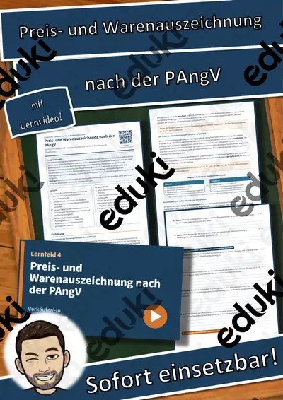
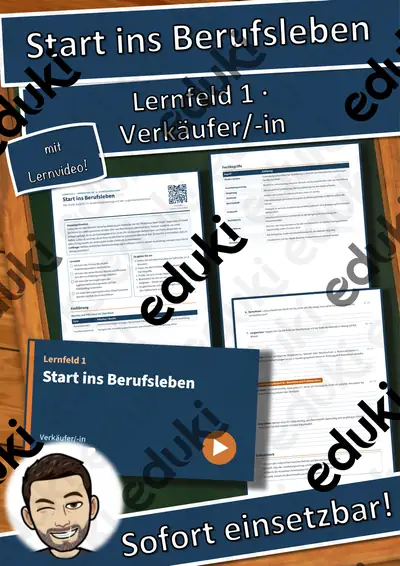
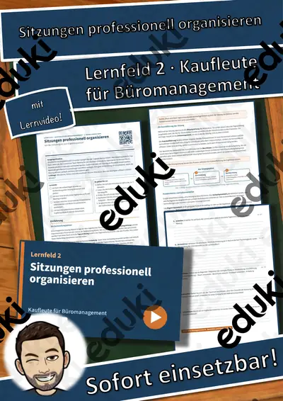
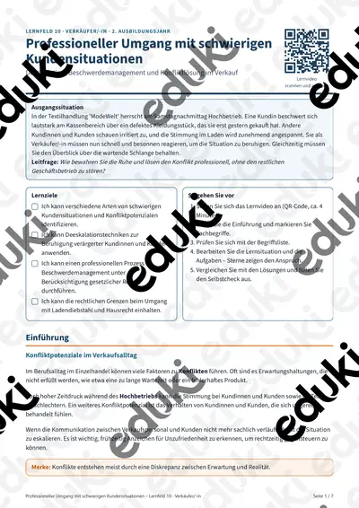
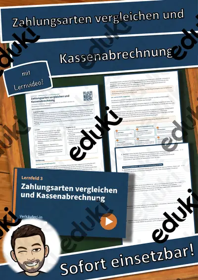
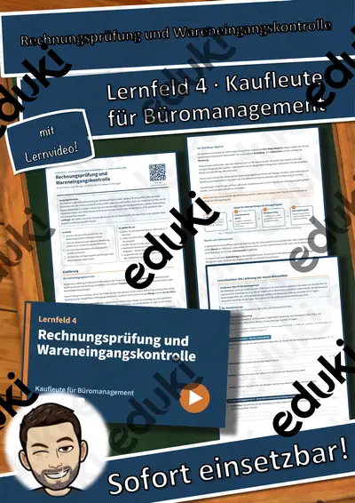
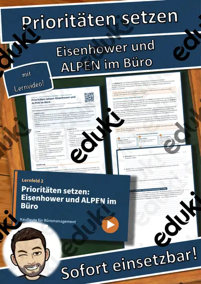

LF 1 Verkäufer/-in: Unternehmensleitbild und Betriebsformen im Einzelhandel – Übungen, Lösungen + Lernvideo

LF 1 Kaufleute für Büromanagement: Rechte und Pflichten in der Ausbildung – Übungen, Lösungen + Lernvideo

LF 9 Kaufleute im Einzelhandel: Preisgestaltung: Vorwärts- und Rückwärtskalkulation – Übungen, Lösungen + Lernvideo

Lernfeld 5 Verkäufer/-in: Wettbewerbsrecht in der Werbung – Einführung, Übungen, Lösungen + Lernvideo

LF 10 Kaufleute für Büromanagement: Kostenrechnung: BAB und Zuschlagskalkulation – Übungen, Lösungen + Lernvideo

Lernfeld 14 Verkäufer/-in: Finanzierungsarten und Zahlungsverzug – Einführung, Übungen, Lösungen + Lernvideo

LF 5 Verkäufer/-in: Werbeplanung und Einsatz von Werbemitteln – Übungen, Lösungen + Lernvideo

LF 4 Kaufleute für Büromanagement: Lieferantenvergleich mit Nutzwertanalyse – Übungen, Lösungen + Lernvideo

LF 4 Verkäufer/-in: Preis- und Warenauszeichnung nach der PAngV – Übungen, Lösungen + Lernvideo
LF 7 Kaufleute für Büromanagement: Beschwerdemanagement & Kundenbindung – Übungen, Lösungen + Lernvideo

Lernfeld 1 Verkäufer/-in: Start ins Berufsleben – Einführung, Übungen, Lösungen + Lernvideo

LF 2 Kaufleute für Büromanagement: Sitzungen professionell organisieren – Übungen, Lösungen + Lernvideo

LF 10 Verkäufer/-in: Professioneller Umgang mit schwierigen Kundensituationen – Übungen, Lösungen + Lernvideo

LF 3 Verkäufer/-in: Zahlungsarten vergleichen und Kassenabrechnung – Übungen, Lösungen + Lernvideo

LF 4 Kaufleute für Büromanagement: Rechnungsprüfung und Wareneingangskontrolle – Übungen, Lösungen + Lernvideo

LF 2 Kaufleute für Büromanagement: Prioritäten setzen: Eisenhower und ALPEN im Büro – Übungen, Lösungen + Lernvideo

Erfolgskonten - Buchführung/Rechnungswesen

Eröffnungsbilanzkonto - Buchführung/Rechnungswesen

Bestandskonten - Buchführung/Rechnungswesen
Keine Materialien gefunden – versuch einen anderen Suchbegriff oder Filter.